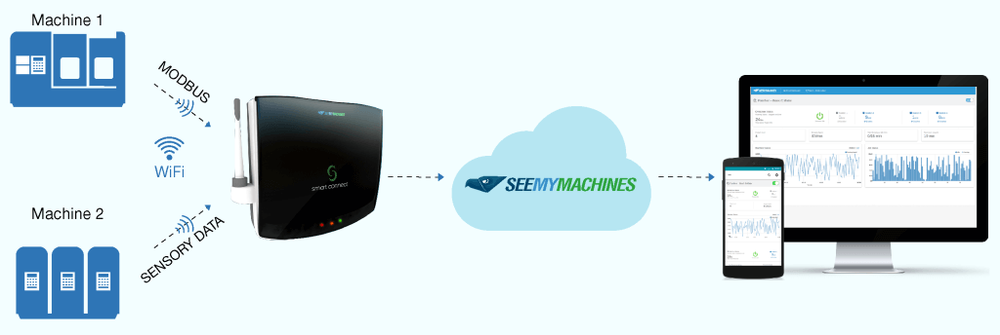

SeeMyMachines is a solution that connects your machines and factory to the Internet. It allows you to receive performance-related inferences and alerts on your computer or mobile device, from anywhere in the world. The information shared with you can be used to improve utilization, productivity, and efficiency of your machines and factory on the whole.
SeeMyMachines will help you maximize productivity and improve efficiency of your machines
As a factory owner, you need to constantly find ways to improve operational performance. Even if your machines work as per your plan, there could be bottlenecks that you are unaware of.
SeeMyMachines can remotely monitor all operations in your production unit. The solution relays push notifications, alerting users about parameter variations such as temperature, pressure, and output. You will have access to latest production statistics, helping you troubleshoot delays.
Achieve new heights in operational intelligence without replacing legacy equipment. Our solution leverages existing infrastructure such as sensors, controllers, and communication protocols to ensure a smooth implementation.
Gain rich insights from analyzed data, and use these to schedulde predictive maintanance and
product enhancements
As a manufacturer and supplier of machinery, you definitely want to ensure that machines you supply to factories work flawlessly, even after delivery.
With SeeMyMachines you can now monitor the condition of machines supplied to factories and ensure uninterrupted workflow, all from your office. From the machine usage pattern you receive, you can detect and diagnose faults remotely and also initiate predictive maintenance.
SeeMyMachines solution uses a combination of hardware and software components to continuously monitor various operational aspects of your production unit. These pieces of information are made available on your smart devices within no time.
So, how does it work?
If your machines are equipped with PLCs:
We will install a device on your machines, which will consolidate operational data captured by PLCs. This device, called Smart Connect, connects the PLCs to the Internet. It will ensure that the data is safely transferred to a virtual space, where it is stored and processed. The processed data can then be accessed on your devices in the form of actionable insights.
The required data can be sent to the application from the PLC, eliminating other physical sensor networks.
If your factory runs on legacy equipment:
Don’t worry if your machines are less sophisticated and do not have PLCs in them. We will install sensors on your machines, which will help capture operational data and transfer it to Smart Connect.
Planet G Systems is an engineering company specialized in automation, with founders having years of experience in designing, assembling, and commissioning of machines. They provide custom solutions for a variety of applications.
Pressline India is a leading manufacturer of prepress and postpress machines with 25 years of experience to their credit. Pressline India is an exclusive channel partner for SeeMyMachines, catering to the needs of Printing and Publishing Houses.
Enjoy the benefits of SeeMyMachines, along with a range of allied services